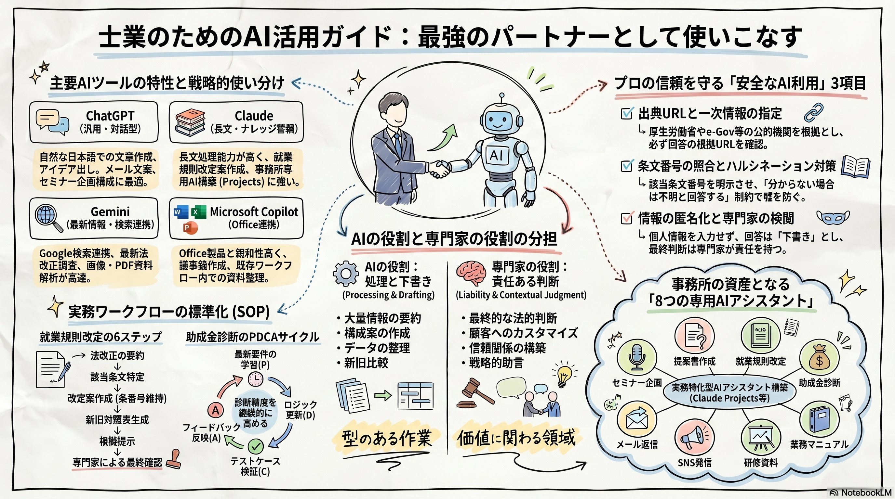

社労士・行政書士など専門知識で勝負するすべての士業へ。
属人的業務を標準化し、顧客支援に集中するための生成AI活用ガイド。
専門家の時間は、本来の価値提供ではなく「作業」に奪われている。
2025年4月施行の育児介護休業法など、常に最新情報のキャッチアップが必須。
少ないリソースで高い品質を維持しなければならないプレッシャー。
「生産性の極限」に直面し、本来の価値提供に時間が割けない。
主要AIツールの戦略的使い分け・安全利用ルール・実務フローを一枚に凝縮。

型のある作業はAIに。価値に関わる領域は人間に。
Processing & Drafting
Liability & Contextual Judgment
AIは士業の仕事を奪うものではありません。調査・整理・下書きを補助する道具です。
それぞれの強みと注意点を理解し、業務に応じて使い分ける。
自然な日本語で文章作成・要約・アイデア出しが高速。初心者でも使いやすい。
長文処理と論理性が極めて高い。Projects機能で専用AI化が可能。
Google検索連携で一次情報到達。PDF・画像解析にも強い。
Office製品とのシームレスな連携。既存業務に組み込みやすい。
AIの回答をそのまま信用しない。必ずこのチェックを通す。
| チェック項目 | 実施内容 |
|---|---|
| 出典URLを確認 | 「回答の根拠となるURLを提示してください」と指示する |
| 一次情報を指定 | 「厚労省、法令データ提供システムなど一次情報のみを根拠に」と指示する |
| 条文番号を確認 | 「該当する条文番号と根拠を示してください」と指示する |
| 不明は不明と回答させる | 「分からない場合は推測せず不明と回答してください」と明記する |
| そのまま渡さない | 最終的な確認・判断は必ず専門家が行う |
| 複数AIで確認 | 重要な内容はChatGPT、Claude、Geminiなどでクロスチェックする |
| 施行日を確認 | 法改正では「いつから適用されるか」を必ず一次情報で確認する |
ハルシネーション・情報漏洩・法的リスクからクライアントを守る。
根拠となるURLを必ず提示させる。
厚労省やe-Gov等の公的機関情報のみに限定。
提示された条文番号と内容が実在するか確認。
推測せず「不明な場合は不明」と明示させる。
氏名や会社名（A社等）は絶対に入力しない。
重要判断は複数のAIで検算する。
「いつから適用か」は一次情報で人の目で確認。
AIの出力は下書き。必ず専門家のフィルターを通す。
ChatGPTやClaudeにコピー＆ペーストでそのまま使えます。
企画書作成・就業規則改定・助成金診断まで、ワンランク上の実践テクニック。
人間が目的と方向性を決め、AIが構成と本文を生成。最終仕上げは人間の判断で。
| STEP | 担当 | 内容 |
|---|---|---|
| 1 | 人 | 企画の目的、対象者、伝えたい内容、成果物の形式をAIに入力する |
| 2 | AI | タイトル案、全体構成、章立て、想定ページ数を生成する |
| 3 | AI | 各章の本文、図解案、事例、キャッチコピーを作成する |
| 4 | 人 | 専門家として内容を確認し、法改正情報や実務経験を加筆する |
| 5 | 人+AI | スライドに整え、PDF化して完成させる |
STEP 1〜5はAIが処理。最終のSTEP 6で専門家が法的責任を持って判断。
施行日・対象者・変更点
既存規程の該当条文番号
条番号を変更せず改定
改定前後を比較表で
法令URLと条文の表示
運用・経過措置の整合性判断
一度作って終わりではない。年度ごとに要件が変わるため、AIを継続的に更新する仕組みが必要。
厚労省資料・パンフレット・要領をAIに読み込ませ、昨年度との差分を整理する。
新しい要件を反映し、不要な項目を削除し、判定条件を書き換える。
複数の企業パターンを作成し、診断結果や金額試算が正しいか確認する。
利用者の声を反映し、質問項目や表示内容を分かりやすく修正する。
Claude Projects等で構築。一度作れば「事務所の資産」となる。
構成案、講師台本を作成。
提案書、説明資料を作成。
法改正をもとに規程改定。
企業情報から要件を確認。
顧客対応メール文案作成。
専門情報を投稿文に変換。
スライド構成、ワーク作成。
手順書、チェックリスト整備。
実際に構築されたAIツール・テンプレートをご覧いただけます。
動画・音声・資料で、いつでも学習いただけます。